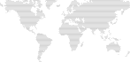

Deterministic where it matters. AI where it helps.
In practiceThe matcher picks pairs with pure, tested code. The LLM only writes the reason.

From Yarmouk in 2021 to an AI platform for 350+ agents in 2026. I'm Saad, a full-stack AI engineer and co-founder from Amman. I build AI products end to end, and the load-bearing parts underneath them.

Four years of data science, machine learning and AI in Irbid. Graduated in 2025 with a GPA of 85, Excellent.
My first workshop as a speaker, on data science, and my first time reviewing a course before it went out to students.
1st place in the Arab World at the AI Olympiad, across 7 countries. Top 10 of 300+ at a national fintech hackathon, and an incubation offer from Ahli Fintech. I started teaching ML at ZINC, grew a 300+ student community at the university, and coordinated the launch of the Hayat Business Incubator.
Flora AI, an Arabic AI nutritionist: 100+ leads in 3 days with no ad budget. IT Lead at Next Step, where automation cut manual work by 85% at events of 1,200+ people. Mentoring 35+ trainees at SHAI For AI, and VP at AIESEC in Jordan. NASA Space Apps, GazaThon and Orange Coding Academy along the way.
Co-founded SKAI Group in January. Built an 18-person IT department from scratch as Head of IT at Bader Wa Sahem. 2nd in the Arab World and 1st in Jordan at Datadrip, 1st in Jordan at HAAC. Computer vision at Envisionsai. Graduated in August, taught two diplomas at Elite Excellence Academy, and joined Decasonic in December.
At Decasonic I architected the shared schema, the MCP Hub and the Agent Control Panel, and built 15 core products: 350+ agents and 35+ apps on one layer. The Investor Day app ran live for 300 people in Chicago. Then Masraf at SalamHack, Hemolock, Dubljly at the Amman AI Hackathon, and the Agent Control Panel accepted into mySTARTUP as a SKAI Group product.
AI-native studio: AI systems, web, mobile and SaaS. 4 clients in 2 weeks; took the Agent Control Panel into mySTARTUP.
Architected the AI platform from scratch: shared schema, MCP Hub, Agent Control Panel. 350+ agents, 35+ apps, 15 apps built myself.
Designed and taught diplomas in AI & Data Science and in BI & Data Analysis, five cohorts and 25+ students in all.
Built an 18-person IT department in two teams, and the AI and technology roadmap for Bader and its 4 sub-organizations.
Computer vision models that find faults in solar panels, from building the dataset to training.
One of Bader Wa Sahem’s organizations. Event automation that cut manual work by 85% at events of 1,200+ people, and AI LinkedIn Clinics run live.
Into the top 3 chapters globally within a month as VP. 350+ sign-ups in under 30 days, a team of 20+ across 3 universities.
An Arabic AI nutritionist, incubated by INJAZ. 100+ leads in 3 days with $0 in ads; 3rd at IEEE NETC, Top 7 at JEC.
Mentored 35+ trainees through end-to-end AI projects, from EDA to ML to deployment, and reviewed their capstone projects.
Ran the launch of the Hayat Business Incubator: picked and trained 16 students and designed a four-sector supply-chain challenge.
Taught ML from zero, including to students with no programming background. Grew a 300+ student community.
Top 10 of 300+ at the Fintech Hackathon, then incubation: product, UX, pitching and investment readiness.
Gave a data science workshop and reviewed a data analysis course before it launched.

Accepted into mySTARTUP. Turning an internal control plane into something any team running agents can use.
Live after the Amman AI Hackathon, and applying to the Founding MENA × Replit Hackathon to grow it. Read the case study.
Validating the multilayer physics with a 1D FDTD solver before generating training data.
AI engineering and AI infrastructure roles, plus contracts and workshops. See how I work.
In practiceThe matcher picks pairs with pure, tested code. The LLM only writes the reason.
In practiceFallback chains live in one place, and the UI says so when the primary model didn't answer.
In practiceLLM summary, then deterministic extract, then static fallback. Compose never returns a 500.
In practiceTrust tiers as CHECK constraints. Permissions at table and column level.
In practiceImprovements are proposed with evidence, approved by a person, and reverted in one click.
In practiceZero cost data across 51,378 execution logs made the case faster than any slide.
A medical-device team lost their emergency-kit prototype. I rebuilt the electronics and firmware: flip one switch, and after a 5-second cancellable countdown it sends your GPS location over Telegram in Arabic and English, then places automated calls.
Replicating a 2025 paper that detects brain hemorrhage from an antenna's reflection, without the commercial solvers it relied on. A semi-analytical model generates data, and custom FDTD solvers check the physics.
I teach ML at Al-Ahliyya Amman University's AI & Data Science Club, run workshops with CodeLine, and run a summer program that introduces school students to AI and web design.
With SKAI Community we help teams in Jordan find hackathons, form teams, practice pitching and turn ideas into startups.
Math & Algorithms track · 2023
Power BI over 1GB+ of banking data. Featured on Jordan TV · 2025
National competition · 2025
Whether it's a role, a project or a hackathon team, I'd like to hear about it.